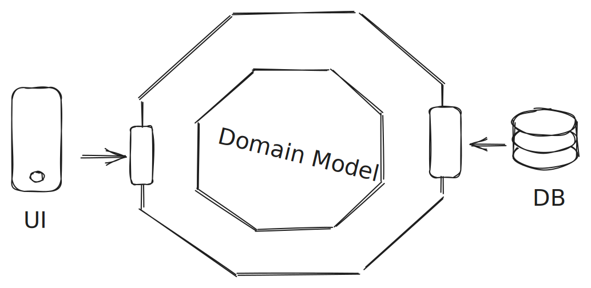

Typical, layered architectures typical provide abstractions "upward" from the domain model used in the database
Hexagonal architecture abstracts not only upward from the database, towards UI, Messaging System, etc as well
Protect your core domain model against leaking, thus making sure that changes in outer layers can never force you to change the core
You end up with tons and tons of interfaces and duplications that constantly change during development, creating a unmaintainable mess
Apply abstractions where they make sense (eg, around your database entities)
Apply common sense everywhere else
Preventing your core domain model from leaking to the web is common sense
Preventing everything from leaking everywhere is ridiculous
Non-blocking APIs typically invoke a callback function when their work is done
Because threads are no longer blocked waiting for downstream work to continue, we can build very responsive API
The programming model is very different from classic, imperative code
The learning curve is very steep, it takes years (!) for a team of old-school java devs to fully embrace non-blocking APIs
Can be fully leveraged only when downstream APIs (database, external systems, ...) can also be used in a reactive way
Consider expected load scenarios before making design decisions
In most cases, horizontal scaling might prove to be more cost-efficient
From the Spring WebFlux documentation:
We expect that, for a wide range of applications, the shift is unnecessary.
Command-query responsibilty segregation essentials means separating the write- and the read-models of your application
Applications with an asymmetric read-write load (lots of writes, very little reads) and APIs (read operations require computed outputs, message/command-driven write APIs) benefit from seperate models
Maintaining separate models, along with controller classes, business logic, persistence layers etc, leads to far more complex software projects
Separate models implcitly lead to eventual consistency (stale reads)
Always consider using a plain CRUD API first
When starting out with CRUD API, we can "evolve" a separate write API over time, keeping the CRUD API for read operations
From Greg Young's blog:
CQRS is not a silver bullet
CQRS is not a top level architecture
CQRS is not new
CQRS is not shiny
CQRS will not make your jump shot any better
[...]
CQRS can open many doors.
Persistance pattern where the state of an aggregate (business object) is maintained as a stream of business events manipulating said aggregate
Focus on change instead of state leads to reactive, responsive systems
All domain objects implicitly have a history
Very complex persistence pattern
Usually implemented along with CQRS, leading to expotentially more complex software systems
When used with CQRS, we aren't allowed to query the aggregates! Instead, we have to provide separate read models called projections
Event-driven systems can easily be build using CRUD APIs
When a history of domain objects is required (eg, for auditing), consider using envers
Unless you're building a real-time stock trading system, don't do it
"Classic" SPAs fetch only barebone HTML and lots of resources via HTTP, the app is rendered entirely within the browser
Server-Side Rendered apps are pre-rendered on the server and transmitted as acutal, usuable HTML to the brwoser
Instead of downloading multiple megabytes of resources prior to bootstrapping, the first assets to be transferred are already usable HTML
Faster load times, less flicker
We need to build an SPA that can be rendered in the backend and then be hydrated in the browser
There are SPA frameworks promising to deliver server-side rendering with a smooth developer experience (hi Nuxt 👋), but offer a questionable experience in other aspects (our test API is still in development and should not be used for production 💩)
YAGNI